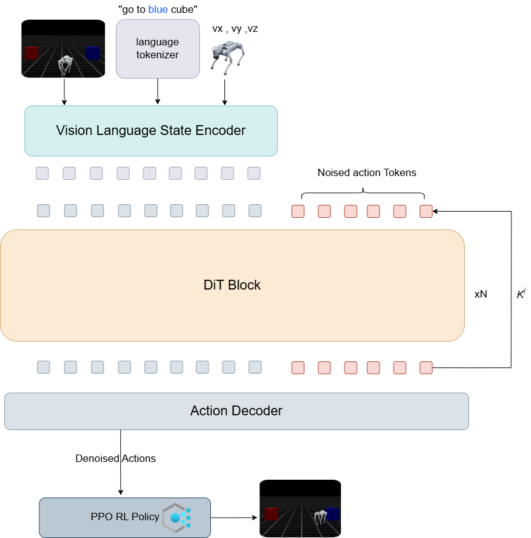
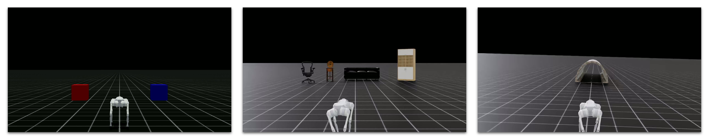

QROOT: An Integrated Diffusion Transformer and Reinforcement Learning Approach for Quadrupedal Locomotion#
📝 Abstract#
Quadrupedal robots offer superior mobility in unstructured environments, yet lack the generalist autonomy seen in recent humanoid systems. In this work, we present QROOT, a novel adaptation of the GR00T N1 foundation model to quadrupedal platforms. QROOT enables a quadrupedal robot to interpret natural language instructions, perceive its environment, and generate locomotion-centric behaviors through a unified Vision-Language-Action (VLA) framework.
To bridge the embodiment gap, we introduce a control stack that combines diffusion transformer with a reinforcement learning-based stabilizer(PPO), enabling smooth and robust execution on real-world hardware. Our approach generalizes effectively to navigation, search, and object-localization tasks with minimal fine-tuning, demonstrating the feasibility of transferring generalist robot models to mobile, legged platforms.
🎯 Key Features#
Natural Language Understanding: Interpret and execute natural language commands
Environment Perception: Advanced vision-based environment understanding
Robust Locomotion: Combined diffusion transformer and PPO-based control
Task Generalization: Effective performance across multiple task types
Real-world Deployment: Hardware-ready implementation
🔬 Methodology#
Algorithm Architecture#
Simulation Environments#
We conducted simulation using IsaacSim, designing three distinct environments for different task types:

Task Categories#
🎯 Object-localization tasks
🔍 Search Tasks
🗺️ Navigation Tasks
📊 Dataset Creation#
We developed a user-friendly interface for robot teleoperation and dataset management, enabling:
Direct movement control
Real-time simulation
Systematic data collection
Control Interface#
W: Forward movement
S: Backward movement
D: Right movement
A: Left movement
Demonstration of keyboard-based robot control in IsaacSim
🎓 Training Configuration#
Parameter |
Value |
|---|---|
Hardware |
NVIDIA A6000 GPU |
Batch Size |
16 |
Training Steps |
1,000 |
Optimizer |
AdamW |
Learning Rate |
1×10⁻⁴ |
β₁ |
0.95 |
β₂ |
0.999 |
Epsilon |
1×10⁻⁸ |
Weight Decay |
1×10⁻⁵ |
Learning Rate Schedule |
Cosine Annealing |
Warm-up Ratio |
0.05 |
🎮 Policy Execution#
Object Localization Tasks#
🟦 Go to Blue Cube#
🟥 Go to Red Cube#
Search Tasks#
🪑 Find Chair#
🛋️ Find Sofa#
📝 Conclusion#
In this study, we adapt the GR00T N1 architecture to quadrupedal robots through a hybrid framework that combines a Vision-Language-Action (VLA) model with Proximal Policy Optimization (PPO). This integration enables robust, adaptable locomotion by uniting high-level semantic understanding with stable, reinforcement learning-based control.
Our results highlight the potential of combining model-based and learning-based approaches for generalist robotics. Future work will explore:
More complex task scenarios
Enhanced sensory input integration
Cross-platform policy transfer
Improved real-world versatility